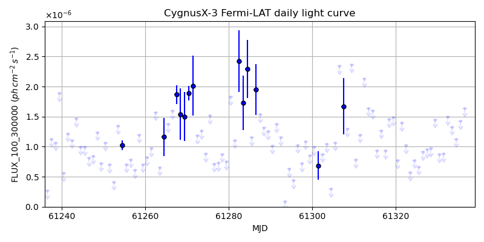
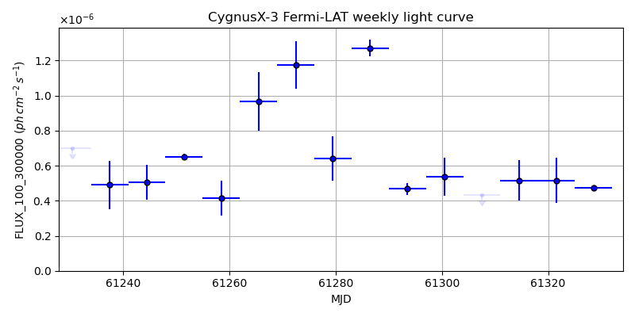
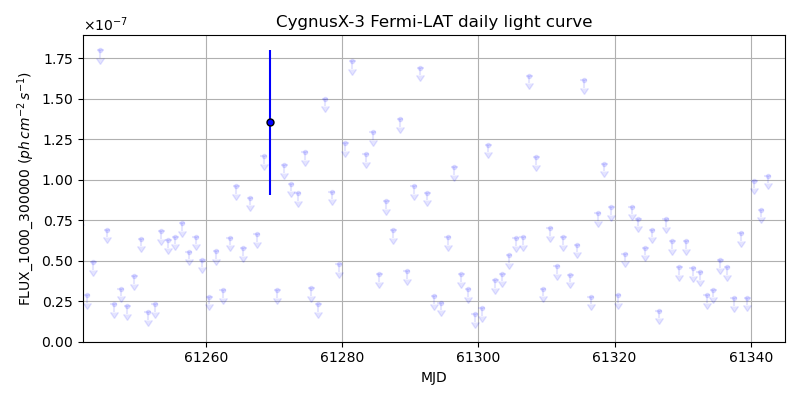
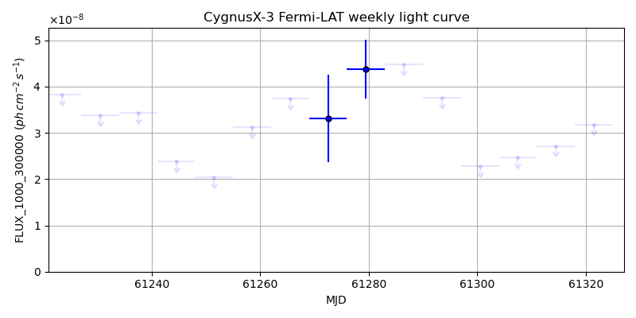

LAT Lightcurve site: https://fermi.gsfc.nasa.gov/ssc/data/access/lat/msl_lc/source/Cygnus_X-3
NED: Query
Time of last update of this page: UT: 2026-10-30 15:26 (MJD: 61343.643)
| Property | Value |
|---|---|
| R.A. | 20:32:25.68 |
| Dec. | 40:57:28.8 |
| z | 0.000 |
| 3FGL SpectrumType | |
| 3FGL PL Index | -1.00 |
| 3FGL Flux_100_300000 | -1.00e+00 |
| 3FGL Flux_1000_300000 | -1.00e+00 |
| 3FGL Flux >200 GeV | -1.00e+00 |
| 3FGL Extrap. Crab >200 GeV | -1.00 |
| 3FGL Flux After EBL Absorption >200GeV | -1.00e+00 |
| 3FGL EBL Crab Fraction >200GeV | -1.00 |

| MJD | dMJD | Flux | dFlux | Frac3FGL | FracCrab>200GeV | EBLFracCrab>200GeV |
|---|---|---|---|---|---|---|
| 61338.50 | 0.50 | 2.64e-07 | 0.00e+00 | 0.00 | 0.00 | -0.00 |
| 61339.50 | 0.50 | 7.67e-07 | 0.00e+00 | 0.00 | 0.00 | -0.00 |
| 61340.50 | 0.50 | 1.08e-06 | 0.00e+00 | 0.00 | 0.00 | -0.00 |
| 61341.50 | 0.50 | 1.24e-06 | 0.00e+00 | 0.00 | 0.00 | -0.00 |
| 61342.50 | 0.50 | 1.29e-06 | 0.00e+00 | 0.00 | 0.00 | -0.00 |

| MJD | dMJD | Flux | dFlux | Frac3FGL | FracCrab>200GeV | EBLFracCrab>200GeV |
|---|---|---|---|---|---|---|
| 61307.50 | 3.50 | 4.34e-07 | 0.00e+00 | 0.00 | 0.00 | -0.00 |
| 61314.50 | 3.50 | 5.16e-07 | 0.00e+00 | 0.00 | 0.00 | -0.00 |
| 61321.50 | 3.50 | 5.16e-07 | 0.00e+00 | 0.00 | 0.00 | -0.00 |
| 61328.50 | 3.50 | 4.73e-07 | 0.00e+00 | 0.00 | 0.00 | -0.00 |
| 61335.50 | 3.50 | 6.71e-07 | 0.00e+00 | 0.00 | 0.00 | -0.00 |

| MJD | dMJD | Flux | dFlux | Frac3FGL | FracCrab>200GeV | EBLFracCrab>200GeV |
|---|---|---|---|---|---|---|
| 61338.50 | 0.50 | 6.71e-08 | 0.00e+00 | 0.00 | 0.00 | -0.00 |
| 61339.50 | 0.50 | 2.73e-08 | 0.00e+00 | 0.00 | 0.00 | -0.00 |
| 61340.50 | 0.50 | 9.93e-08 | 0.00e+00 | 0.00 | 0.00 | -0.00 |
| 61341.50 | 0.50 | 8.14e-08 | 0.00e+00 | 0.00 | 0.00 | -0.00 |
| 61342.50 | 0.50 | 1.03e-07 | 0.00e+00 | 0.00 | 0.00 | -0.00 |

| MJD | dMJD | Flux | dFlux | Frac3FGL | FracCrab>200GeV | EBLFracCrab>200GeV |
|---|---|---|---|---|---|---|
| 61307.50 | 3.50 | 2.47e-08 | 0.00e+00 | 0.00 | 0.00 | -0.00 |
| 61314.50 | 3.50 | 2.72e-08 | 0.00e+00 | 0.00 | 0.00 | -0.00 |
| 61321.50 | 3.50 | 3.18e-08 | 0.00e+00 | 0.00 | 0.00 | -0.00 |
| 61328.50 | 3.50 | 2.77e-08 | 0.00e+00 | 0.00 | 0.00 | -0.00 |
| 61335.50 | 3.50 | 1.31e-08 | 0.00e+00 | 0.00 | 0.00 | -0.00 |
--------------------------------------------------------- Using user-supplied coords: 20:32:25.68 40:57:28.8 2000 --------------------------------------------------------- FLWO UT night of: 2026-10-31 Local Sid. @ Midnight: 02:14 Sunset (-15.0) (local, UT): 18:44 01:44 Sunrise (-15.0) (local, UT): 05:31 12:31 Moonrise (local, UT): 21:49 04:49 Moonset (local, UT): Moon phase: 0.68 --------------------------------------------------------- AzTime LSID UT Obj_el Obj_az Mn_el Mn_az Sep. --------------------------------------------------------- 18:44 20:57 01:44 79.4 334.2 -27.0 28.6 110.6 19:14 21:27 02:14 75.6 314.5 -23.9 34.8 110.7 19:44 21:57 02:44 70.7 304.9 -20.2 40.4 110.8 20:14 22:27 03:14 65.2 300.3 -16.1 45.6 111.0 20:44 22:58 03:44 59.7 298.3 -11.6 50.4 111.1 21:14 23:28 04:14 54.0 297.6 -6.7 54.8 111.2 21:44 23:58 04:44 48.3 297.9 -0.9 58.8 111.3 22:14 00:28 05:14 42.7 298.7 3.8 62.5 111.4 22:44 00:58 05:44 37.1 300.1 9.2 66.0 111.5 23:14 01:28 06:14 31.6 301.8 14.8 69.3 111.6 23:44 01:58 06:44 26.3 303.8 20.6 72.5 111.7 00:14 02:28 07:14 21.0 306.1 26.5 75.5 111.8 00:44 02:58 07:44 16.0 308.8 32.5 78.6 111.8 01:14 03:28 08:14 11.1 311.8 38.5 81.7 111.9 01:44 03:58 08:44 6.5 315.0 44.7 84.9 112.0 02:14 04:28 09:14 2.3 318.7 50.8 88.3 112.1 02:44 04:59 09:44 -1.2 322.6 57.0 92.2 112.2 03:14 05:29 10:14 -5.5 326.9 63.2 97.0 112.2 03:44 05:59 10:44 -9.0 331.6 69.3 103.5 112.3 04:14 06:29 11:14 -11.8 336.6 75.2 113.7 112.4 04:44 06:59 11:44 -14.1 341.9 80.4 133.8 112.5 05:14 07:29 12:14 -15.8 347.5 83.0 177.6 112.6 05:31 07:46 12:31 -16.5 350.8 82.2 206.9 112.7 --------------------------------------------------------- Dark hours >55 deg.: 2.41 srcstart (UT): 2026-10-31 01:44 srcend (UT): 2026-10-31 04:08